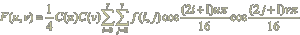
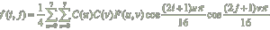
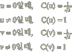
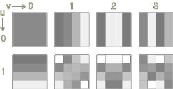
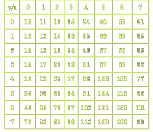
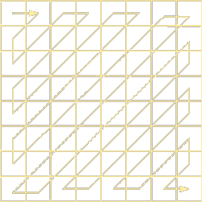

DCT(Discrete Cosine Transform, 이산 코사인 변환)는 직교 교환의 하나로서, DFT와 같은 종류라 할 수 있다. Discrete는 이산, 즉 디지털 신호를 의미한다. DCT에 의한 정지 영상의 대역 압축이 JPEG에 의하여 규격화되었기 때문에, 이에 근거하여 설명하기로 한다. DCT 수행 과정을 살펴보면, 영상 데이터를 의 블록으로 나누고, 이 블록 내의 화소에 대해서 DCT의 연산을 행한다. DCT의 변환식은,

이고, 역 변환식은,
이다
위의 수식에서, f(i,j)는 입력영상, F(u,v)는 변환 영상이고, 계수 C(u)는,
이다
으로 결정된다.
위의 DCT 변환식과 역 변환식에서 알 수 있는 것과 같이 cosine을 곱하여 변환을 취하고 있다. 이 cosine과 같이 변환할 때 사용되는 함수를 기저 함수라고 하면, 영상을 취급하는 경우는 특히 기저 영상이라고 부른다. DCT에서 사용되는 기저 영상의 일부를 [그림 6.12]에 나타내었다.

[그림 1] DCT 기저 영상의 일부
[그림 1]에서 알 수 있는 것과 같이, u=0, v=0은 직류 성분을 나타내고, u,v가 클수록 높은 주파수를 나타낸다. 따라서 기저 영상은 주파수마다의 영상을 볼 수가 있다. 역 변환식을 잘 보면, 변환 영상 F(u,v)는 주파수마다의 기저 영상의 계수가 됨을 알 수 있다.
결국, 변환 영상은 원 영상을 주파수 별로 분해할 때 성분이 크게 된다는 것을 나타내고 있다. 그리고 대역 압축 과정을 살펴보면, 낮은 주파수의 성분(저역 성분)의 에너지는 크지만, 높은 주파수의 성분(고역 성분)의 에너지는 작아진다고 하는 영상의 성질을 이용하여 대역을 압축한다. 결국, cosine변환을 하여 주파수 별로 분할할 때에, 고역의 계수 (u,v)가 큰 변환 영상 F(u,v)는 작고, 이것이 1이하의 경우는 0이 되도록 하는 것이다. DCT 변환식을 예로 살펴보기로 하자.
영상 데이터를 8비트로 하면, 이식은 64회의 연산으로 충분하기 때문에, DCT의 계산의 결과, 변환 영상은 영상 데이터의 64배 결국 14비트가 되지만, 전체를 1/4로 하기 때문에, 이결과의 16배가 된다. 따라서 이 과정을 수행한 후 DCT 변환 영상은 12비트가 된다. 이것을 1/16로 하면 원 영상의 데이터와 같은 8비트가 된다.
결국 12비트의 변환 영상을 8비트로 양자화하는 것이 되고, 고역 성분에 대해서는 할당하는 비트 수를 감소시키는 결과가 된다. DCT 변환 후 16으로 나누면 변환 영상은 8비트가 되지만, 고역의 경우는 더 큰 값으로 나누면 비트 수를 감소시킬 수 있다. 나누는 값을 주파수 별로 나타낸 표를 양자화 테이블 또는 Q테이블이라고 부르는데 그 예를 아래 [표 1]에 나타내었다.
이와 같이 양자화를 행하면, 고역의 변환 계수는 0이 많게 되므로 run length 부호화와 허프만 부호화를 이용하여 압축을 할 수 있다.

[표 1] 양자화 테이블
run length 부호화에서는 0이 연속되는 경우가 많을수록 압축률이 높게 되므로, [그림 2]에 나타낸 것과 같이 지그재그 스캔을 하여 고역 성분을 모으고, 그후에 run length 부호화와 허프만 부호화로서 압축을 하는 경우가 많고, 블록 내의 평균 명도를 나타내는 직류 성분 (u=0, v=0)에 대해서는, 이웃의 블록의 명도와 관계가 크기 때문에, DPCM을 이용하여 압축하는 경우가 일반적이다

[그림 2] 지그재그 스캔